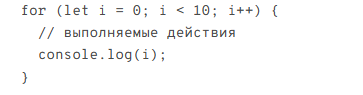
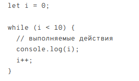
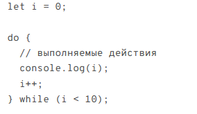

Решение задачи о циклах в JavaScript
Циклы позволяют выполнять определенные действия несколько раз. В JavaScript есть несколько типов циклов, самые популярные - это цикл for, цикл while и цикл do...while.Цикл for позволяет выполнять действия определенное количество раз. Его синтаксис выглядит следующим образом:
В данном примере цикл for будет выполняться 10 раз. Переменная i инициализируется значением 0, условие i < 10 гарантирует, что цикл будет выполняться пока значение i меньше 10, а оператор i++ увеличивает значение i на 1 после каждой итерации цикла.
Цикл while выполняет действия до тех пор, пока заданное условие истинно. Его синтаксис выглядит следующим образом:
В данном примере цикл while также будет выполняться 10 раз. Начальное значение i равно 0, и пока i < 10, цикл будет выполняться. В каждой итерации значение i увеличивается на 1.
Цикл do...while похож на цикл while, но он сначала выполняет действия, а затем проверяет условие. Его синтаксис выглядит следующим образом:
В данном примере цикл do...while также будет выполняться 10 раз. Начальное значение i равно 0, и сначала выполняются действия внутри цикла, а затем проверяется условие i < 10. Если условие истинно, цикл продолжается, иначе он завершается.
Циклы в JavaScript предоставляют мощный инструмент для повторения действий и выполнения различных задач. Используйте соответствующий цикл в зависимости от условий задачи.